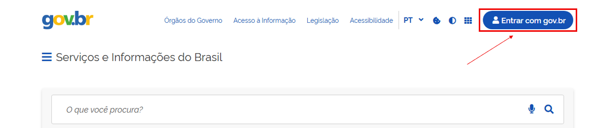
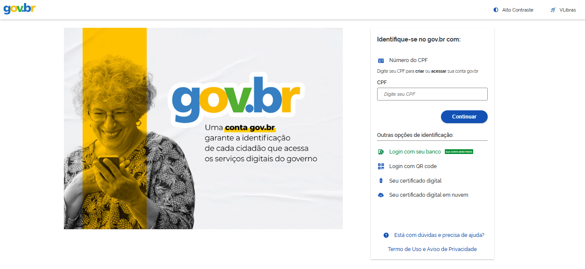
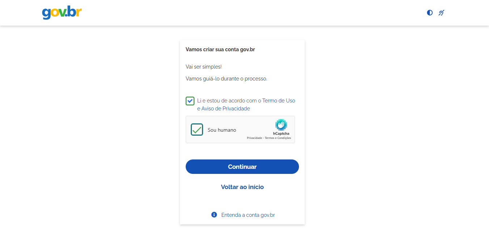
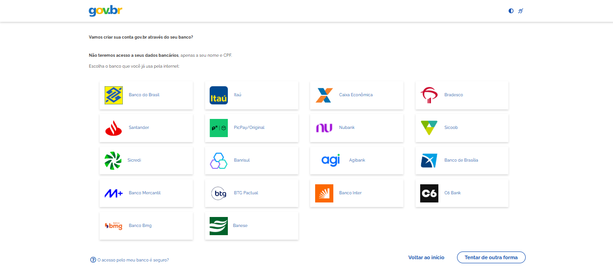

O Que Você Vai Aprender
- Criar sua conta Gov.br (começando no nível Bronze)
- Entender como aumentar para nível Prata
- Acessar e baixar seu CPF Digital
- Ver sua Carteira de Trabalho Digital
- Consultar informações do INSS
Antes de Começar: Tenha em mãos seu CPF, dados pessoais básicos (data de nascimento, nome da mãe, cidade natal) e um celular ou email funcionando. O processo leva cerca de 15-20 minutos e é totalmente gratuito e seguro!
Por Que Criar uma Conta Gov.br?
A conta Gov.br é sua identidade digital para acessar mais de 3.000 serviços públicos federais. Com ela você pode:
- Evitar filas em bancos e órgãos públicos
- Acessar documentos a qualquer hora, de qualquer lugar
- Economizar tempo e dinheiro (sem precisar pagar despachantes)
- Ter mais autonomia e independência
- Consultar informações importantes sobre sua vida profissional
1
Acesse o Site Oficial Gov.br
Abra o navegador do seu celular ou computador (pode ser Chrome, Firefox, Safari, Edge ou qualquer outro).
Na barra de endereços (onde você digita o site), digite:
Site oficial: www.gov.br
Pressione ENTER. A página inicial do Gov.br vai abrir.
No canto superior direito da página, você verá um botão azul escrito "Entrar com Gov.br". Clique nele.

Página inicial do Gov.br - clique no botão azul "Entrar"
2
Digite Seu CPF
Você será levado para a página de login em https://acesso.gov.br
Você verá um campo grande pedindo seu CPF e logo abaixo um link "Criar sua conta Gov.br". Clique nesse link.
Dica de Segurança: Sempre verifique se o endereço do site começa com https://acesso.gov.br e tem um cadeado fechado 🔒 ao lado. Isso significa que o site é seguro e seus dados estão protegidos.
Agora você verá uma nova tela pedindo para você digitar seu CPF.
Digite apenas os 11 números do seu CPF, sem pontos ou traços.
Exemplo: Se seu CPF é 123.456.789-00, digite 12345678900
Clique no botão "Continuar".

Digite seu CPF (apenas números, sem pontos ou traços)
3
Aceite os Termos de Uso
Na próxima tela, você precisará concordar com os termos antes de continuar.
Você verá duas caixinhas (checkboxes) que precisa marcar:
- ☑️ "Li e estou de acordo com o Termo de Uso e Aviso de Privacidade" - Clique na caixinha para marcar
- ☑️ "Sou humano" ou "Não sou um robô" (captcha) - Clique para confirmar
Depois de marcar as duas opções, o botão "Continuar" ficará disponível. Clique nele.
O que são esses termos? São as regras de uso e como seus dados serão protegidos. O governo garante a segurança das suas informações pessoais.

Marque as duas caixinhas e clique em Continuar
4
Escolha o Método de Cadastro
Esta é uma tela muito importante! O sistema Gov.br oferece diferentes formas de validar sua conta. Você pode escolher a que for mais fácil para você.
As opções disponíveis são:
- Bancos Credenciados - Usar sua conta de banco pela internet (Banco do Brasil, Caixa, Bradesco, Santander, Banrisul, Sicoob, etc.)
- Tentar de outra forma - Ver outras alternativas de validação oferecidas pelo sistema
RECOMENDAÇÃO:
- você tem conta em um dos bancos listados e acessa internet banking, escolha "Bancos Credenciados" - é rápido e prático!
- Se não usa nenhum desses bancos, clique em "Tentar de outra forma" para ver as outras alternativas disponíveis.

Escolha o método de validação que for mais conveniente para você
5
Responda as Perguntas de Validação
Agora o sistema vai fazer algumas perguntas sobre você para confirmar sua identidade. Estas perguntas são baseadas em informações que o governo já tem em registros públicos (como Receita Federal, cartório, etc.).
Exemplos de perguntas que podem aparecer:
- "Qual é a sua data de nascimento?"
- "Qual é o nome completo da sua mãe?"
- "Em qual cidade você nasceu?"
- "Qual é o seu estado civil?"
- "Qual é o número do seu título de eleitor?"
Responda cada pergunta com cuidado. As respostas precisam estar exatamente iguais aos seus documentos oficiais.
MUITO IMPORTANTE:
- Se você errar as respostas, pode precisar tentar outro método de cadastro
- Confira cada resposta antes de clicar em "Continuar"
- Use os dados EXATAMENTE como estão nos documentos (RG, CPF, Certidão)
Depois de responder todas as perguntas, clique em "Continuar".
6
Escolha Como Receber o Código de Validação
Se você respondeu as perguntas corretamente, o sistema vai confirmar seus dados (CPF e nome completo) e pedir para você escolher como quer receber um código de segurança.
Você terá duas opções:
| Opção |
Como Funciona |
O Que Você Precisa |
| Por E-mail |
Código enviado para seu email |
Ter acesso ao seu email agora |
| Por SMS |
Código enviado por mensagem de texto |
Celular com você e com sinal |
Escolha a opção que for melhor para você:
- Se escolher email: Digite seu endereço de email completo (exemplo: seunome@gmail.com)
- Se escolher SMS: Digite seu número de celular com DDD (exemplo: 61912345678)
Depois de digitar, clique no botão "Enviar código" ou "Continuar".
Recomendação: O SMS costuma ser mais rápido (chega em segundos). Mas se seu celular estiver sem sinal, use o email!
7
Digite o Código de Validação
Em alguns segundos (ou minutos), você receberá um código de 6 dígitos no email ou SMS que você escolheu.
Exemplo de código: 123456
Na tela do computador/celular, você verá um campo pedindo este código. Digite os 6 números que você recebeu.
Dicas Importantes:
- O código expira em 10 minutos - use logo que receber!
- Se não receber em 2-3 minutos, clique em "Reenviar código"
- Verifique a caixa de SPAM do email se escolheu email
- Verifique se o celular tem sinal se escolheu SMS
- NUNCA compartilhe este código com ninguém!
Depois de digitar o código, clique em "Validar" ou "Continuar".
8
Crie uma Senha Forte e Segura
Agora você precisa criar uma senha para proteger sua conta. Esta senha será usada toda vez que você quiser acessar os serviços do Gov.br.
Regras obrigatórias para a senha Gov.br:
- Mínimo de 8 caracteres (recomendamos 12 ou mais!)
- Pelo menos 1 letra MAIÚSCULA (A, B, C...)
- Pelo menos 1 letra minúscula (a, b, c...)
- Pelo menos 1 número (0, 1, 2, 3...)
- Pelo menos 1 caractere especial (@ # ! $ % & * + =)
Exemplos de senhas fortes:
Brasil2026@SeguroMinhaConta#2026!Gov@Forte2026
Evite senhas fracas como:
- 123456, senha123, 12345678
- Seu nome + ano de nascimento (João1985)
- Datas óbvias (aniversário)
- Sequências (abcdef, qwerty)
REGRAS DE OURO DE SEGURANÇA:
- NUNCA compartilhe sua senha com ninguém (nem família!)
- NUNCA use a mesma senha de outros sites (email, redes sociais, banco)
- NUNCA envie sua senha por WhatsApp, email ou telefone
- O governo NUNCA pede sua senha por telefone ou email
- Anote sua senha em um lugar seguro (caderno guardado em casa)
Digite a senha no primeiro campo e depois digite a mesma senha no segundo campo para confirmar.
Clique em "Concluir" ou "Criar conta".
9
Parabéns! Sua Conta Foi Criada!
Se tudo deu certo, você verá uma mensagem de sucesso dizendo que sua conta Gov.br foi criada!
ATENÇÃO - Informação Importante:
Sua conta foi criada no nível BRONZE (não Prata). Este é o nível inicial que todos recebem ao criar a conta pela primeira vez.
Entendendo os Níveis da Conta Gov.br:
🥉 Bronze (você está aqui!):
• Acesso básico a poucos serviços
• Consegue usar: consultas públicas simples e informações básicas
• Não permite acesso a documentos pessoais ou serviços sensíveis
🥈 Prata (recomendado!):
• Acesso à MAIORIA dos serviços (CPF Digital, Carteira de Trabalho Digital, CNH Digital, etc.)
• Para conseguir: use reconhecimento facial pelo app Gov.br OU validação bancária
• É o nível que a maioria das pessoas usa
🥇 Ouro (para serviços completos):
• Acesso a TODOS os serviços sem restrição
• Necessário para serviços importantes como FGTS, INSS, Receita Federal e assinatura de documentos
• Para conseguir: validação presencial em bancos credenciados, Correios, certificado digital ou internet banking de bancos específicos
Como Aumentar Sua Conta para PRATA:
Você pode fazer isso agora ou depois. Existem duas formas:
1. Reconhecimento Facial (Mais Fácil!):
• Baixe o aplicativo "Gov.br" no seu celular
• Faça login com seu CPF e senha
• Escolha "Aumentar nível da conta"
• Siga as instruções para fazer reconhecimento facial
• Pronto! Sua conta vira Prata em minutos
2. Validação Bancária:
• Se você tem conta em banco credenciado (BB, Caixa, Bradesco, Santander, etc.)
• Acesse o internet banking do seu banco
• Procure por "Conta Gov.br" ou "Validação Gov.br"
• Siga as instruções do banco
Por enquanto, sua conta Bronze já permite que você explore o sistema e veja os serviços disponíveis!
Como Usar os Serviços Principais
Importante: Para usar os serviços abaixo (CPF Digital, Carteira de Trabalho Digital, INSS), você precisará aumentar sua conta para nível Prata. Consulte o passo 9 acima para saber como fazer isso!
1. CPF Digital
Seu CPF sempre à mão, no celular, sem precisar do documento físico!
Como acessar (precisa de nível Prata):
- Entre no site www.gov.br
- Clique em "Entrar com Gov.br"
- Digite seu CPF e senha
- No menu principal, procure por "Meu CPF" ou use a busca
- Pronto! Seu CPF digital aparecerá na tela
- Você pode tirar print ou salvar como imagem
Dica: O CPF Digital tem a mesma validade que o documento físico! Você pode usá-lo em lojas, bancos, repartições públicas e qualquer lugar que peça seu CPF.
2. Carteira de Trabalho Digital
Veja todos os seus vínculos de emprego, salários e tempo de trabalho!
Como acessar (precisa de nível Prata):
- Acesse www.gov.br e faça login
- Procure por "Carteira de Trabalho Digital" no menu ou busca
- Você verá uma lista com todos os seus empregos registrados
- Clique em cada um para ver detalhes: data de admissão, demissão, salário, função
O que você pode fazer: Verificar se algum empregador não registrou sua carteira corretamente, consultar quanto tempo trabalhou em cada lugar, ver seu histórico de salários.
3. Consulta INSS (Meu INSS)
Veja quanto tempo você já contribuiu e se tem direito a benefícios!
Como acessar (precisa de nível Prata):
- No Gov.br, procure por "Meu INSS"
- Você pode ver:
- Tempo total de contribuição
- Extrato de vínculos e contribuições
- Se tem direito a aposentadoria
- Simular aposentadoria
- Consultar benefícios (se tiver)
Dúvidas Comuns
1. Por que não consigo criar minha conta?
Possíveis motivos:
- CPF irregular: Consulte a situação do seu CPF no site da Receita Federal (www.gov.br/receitafederal)
- Dados incorretos nas perguntas: As respostas precisam estar EXATAMENTE como nos documentos oficiais
- Problemas com celular/email: Use um número ou email que você tem acesso agora
- Já tem conta: Você pode já ter criado e esquecido - tente recuperar a senha
2. Esqueci minha senha, e agora?
Solução:
- Na tela de login, clique em "Esqueci minha senha"
- Digite seu CPF
- Você receberá um código por SMS ou email (o que estiver cadastrado)
- Digite o código
- Crie uma nova senha seguindo as regras
3. Preciso pagar alguma coisa?
NÃO! A conta Gov.br é 100% gratuita. Você nunca precisará pagar nada para:
- Criar a conta
- Acessar os serviços
- Consultar documentos
- Aumentar o nível da conta (Bronze → Prata → Ouro)
Cuidado com golpes: Se alguém pedir dinheiro para "ajudar" você a criar conta Gov.br, é GOLPE! Denuncie!
4. Posso usar no celular?
Sim! Você pode:
- Acessar pelo navegador do celular (www.gov.br)
- Baixar o app oficial "Gov.br" na Google Play Store ou App Store
- O app tem as mesmas funções do site, além do reconhecimento facial
5. Minha conta Gov.br expira?
Não! Sua conta não expira. Mas é recomendado:
- Acessar pelo menos uma vez por ano
- Manter seus dados atualizados (celular, email)
- Trocar a senha a cada 6-12 meses por segurança
6. Qual a diferença entre os métodos de cadastro?
No Passo 4, você viu 4 opções. Aqui está a diferença:
- QR Code + App: Precisa baixar o app Gov.br primeiro, mas é rápido e já cria conta Prata
- Bancos Credenciados: Se você tem conta em banco, pode validar por lá (já cria Prata)
- Tentar de outra forma: Só precisa responder perguntas (mais simples, mas cria Bronze)
- Internet Banking: Gera senha temporária pelo site do banco (técnico)
7. Não consegui responder as perguntas corretamente
Solução:
- Tente novamente conferindo bem seus documentos
- Se continuar com erro, escolha outro método (QR Code ou Banco)
- Ou vá a um posto de atendimento presencial do gov.br
Dicas Extras para Usar Melhor o Gov.br
1. Anote sua senha: Escreva em um caderno que você guarda em casa. Não anote no celular ou computador.
2. Baixe o app Gov.br: Procure "Gov.br" na loja de aplicativos do seu celular. É oficial, gratuito e facilita muito o uso!
3. Aumente para Prata logo: Com conta Bronze você tem acesso limitado. Faça o reconhecimento facial no app para liberar todos os serviços importantes.
4. Explore os serviços: Depois de criar a conta e aumentar para Prata, navegue pelo site e veja tudo que você pode fazer. Você vai se surpreender!
5. Ajude outras pessoas: Agora que você sabe, ensine um amigo ou familiar a criar a conta deles também!
Outros Serviços Úteis no Gov.br
Com sua conta Prata, veja outros serviços que pode acessar:
| Serviço |
Para Que Serve |
Nível Necessário |
| CNH Digital |
Sua carteira de motorista no celular |
Prata |
| Título de Eleitor |
Consultar situação eleitoral, local de votação |
Bronze |
| Conecte SUS |
Ver vacinas, exames, histórico de saúde |
Prata |
| Restituição IR |
Ver se tem restituição de Imposto de Renda |
Bronze |
| Certidões |
Emitir certidões negativas federais |
Prata |
| Seguro Desemprego |
Solicitar e consultar seguro desemprego |
Prata |
| FGTS |
Consultar saldo e extrato do FGTS |
Prata |
Parabéns! Você Concluiu Este Tutorial!
Agora você sabe:
- Criar sua conta Gov.br (nível Bronze)
- Entender a diferença entre os níveis (Bronze, Prata, Ouro)
- Como aumentar para Prata (reconhecimento facial ou banco)
- Como acessar CPF Digital, Carteira de Trabalho e INSS
- Resolver problemas comuns
Próximo passo: Aumente sua conta para Prata usando o app Gov.br e explore todos os serviços disponíveis. Você descobrirá muita coisa útil!